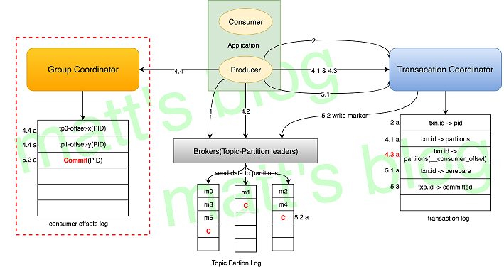
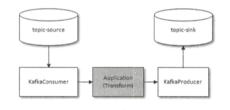

Kafka 幂等性 #
-
为了实现生产者的幂等性， 引入了producer id（PID）和 序列号（sequence number）
PID: producer 初始化的时候分配
序列号： producer每发送一条消息，就会将<PID, 分区>对应的序列号的值+1. -
局限性： Kafka 幂等性只能保证单个producer 回话（session）中单分区的幂等
Kafka 事务 #
- Kafka 幂等性不能跨多个分区运作，而事务可以保证对多个分区写入操作的原子性。
事务性实现的关键 #
- 事务要求producer 开启幂等特性
enable.idempotence = true
- transactionalId：
一个Producer 在 Fail 恢复后能主动 abort 上次未完成的事务（接上之前未完成的事务），然后重新开始一个事务，这种情况应该怎么办？
之前幂等性引入的 PID 是无法解决这个问题的，因为每次 Producer 在重启时，PID 都会更新为一个新值：
Kafka 在 Producer 端引入了一个 transactionalId 来解决这个问题，这个 txn.id 是由应用来配置的；
架构和组件 #

- transactionalId和PID一一对应，transactionalId用户显示设置，PID由Kafka内部分配；
- 跨producer会话的消息幂等发送: 新的producer启动后，具有相同transactionalId的旧producer会立即失效；
- 跨producer会话的事务恢复: producer宕机后，新的producer可以保证未完成的旧事务要么commit，要么Abort。
- TransactionCoordinator(coordinate 协调者)
- 事务日志
语义 #
- Kafka 的事务机制，更多的情况下被用来配合Kafka的幂等机制来实现 Kafka 的 Exactly Once 语义。
- Kafka 的 Exactly Once 机制，是为了解决在**“consume - transform - produce”（流计算）**这样的计算过程中数据不重不丢，而不是我们通常理解的使用消息队列进行消息生产消费过程中的 Exactly Once。
- ”consume - transform - produce“模式
- 
总结 #
幂等性、事务都是0.11.0.0之后引入的特性, 以此来实现EOS（Exactly-Once semantics 精确一次性语义）
Q&A #
- Kafka中的幂等是怎么实现的
- Kafka中的事务是怎么实现的（这题我去面试6家被问4次）
Kafka 幂等性和事务
参考: #
- 消息队列高手课 - 25 | RocketMQ与Kafka中如何实现事务？ 李玥
- Kafka Exactly-Once 之事务性实现 Matt’s Blog-柳年思水
- «深入理解Kafka：核心设计与实践原理» 7.4节